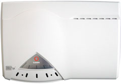
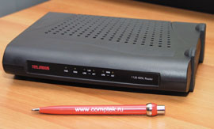
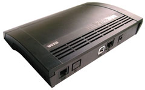
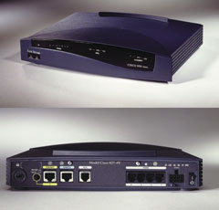
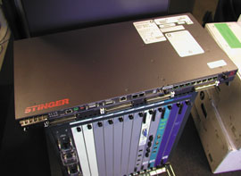
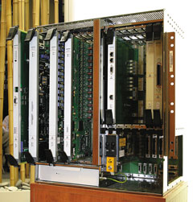

Ростислав Сергеев
При подготовке статьи были использованы материалы ИАЦ "Телекоммуникации" (http://www.telecomforum.ru).
За последние два года в России построено много мультисервисных сетей связи, обладающих высокой пропускной способностью и позволяющих внедрять услуги широкополосного доступа в Интернет на базе технологии асимметричной цифровой абонентской линии (ADSL). В результате соответствующий сервис появился практически во всех федеральных центрах и крупных городах РФ. Пока число введенных в эксплуатацию ADSL-линий относительно невелико, однако неуклонное снижение тарифов и стоимости "входного билета" в мир ADSL-услуг, без сомнения, позволит этой технологии занять доминирующее положение на отечественном рынке высокоскоростного доступа.
По данным исследовательской фирмы Point Topic (http://www.point-topic.com), в странах Восточной Европы в 2002 г. происходил бурный рост DSL-рынка: за прошлый год его объем вырос здесь на 275%. Активно устанавливались DSL-линии и в России (прирост за прошлый год составил 1000%), уступившей по данному показателю только Литве (1566%). В целом в 2002 г. в регионе прибавилось 71,1 тыс. DSL-каналов, в I квартале 2003 г. - еще 32,1 тыс.
Напомним, что технология ADSL существует в виде и "полнофункционального" стандарта (G.dmt, или G.992.1), и "облегченной" версии, получившей название G.Lite (G.992.2). Первый из них обеспечивает максимальную скорость приема данных 8 Мбит/с, передачи - 1,5 Мбит/с. Появившаяся чуть позже спецификация G.Lite предусматривает загрузку и отправку данных на скоростях до 1,5 Мбит и 512 кбит/с соответственно, чего в большинстве случаев достаточно для подключения индивидуальных пользователей. По данным производителей, модемы, работающие по этому стандарту, просты в установке и позволяют большинству абонентов самостоятельно выполнять процедуру подключения. Кроме того, спецификация G.Lite решает многие вопросы совместимости оборудования разных производителей. Поэтому практически все современное оборудование поддерживает обе разновидности ADSL.
В ближайшем будущем можно ожидать появления новых версий стандарта ADSL, предполагающих увеличение дальности и скорости передачи данных (см. врезку "Новое поколение ADSL").
Новое поколение ADSLВ начале 2003 г. Международный союз электросвязи (МСЭ) утвердил рекомендации G.992.3 и G.992.4 в качестве нового стандарта асимметричной цифровой абонентской линии, получившего название ADSL2. По сравнению с предшественником ADSL2 обещает ряд значительных усовершенствований, в том числе увеличение скорости передачи данных. Кроме того, МСЭ завершил разработку рекомендаций G.992.5, которые лягут в основу спецификаций стандарта "второго поколения с плюсом" - ADSL2+. По данным отраслевого консорциума DSL Forum, стандарт ADSL2 разрабатывался с учетом многолетней практики использования ADSL, выявившей многие недостатки данной технологии. В ADSL2 отработаны вопросы совместимости оборудования различных производителей, пересмотрены и доработаны требования к уровням и спектру сигналов. Будущий стандарт ADSL2+ сохранит все преимущества ADSL2, однако его позиционирование на рынке будет иным: он обеспечит вдвое большую скорость передачи данных на небольших расстояниях (до 1,5 км). Таким образом, данное решение станет прежде всего конкурентом еще более скоростной технологии VDSL, которая до сих пор не стандартизована МСЭ. В ADSL2 и ADSL2+ применяется новая модуляция с улучшенными характеристиками, обеспечивающая уменьшение числа служебных бит в DSL-кадрах, более высокую плотность кодирования. Усовершенствованы также средства инициализации абонентских устройств и обработки сигналов. Благодаря этому максимальная скорость в сетях доступа на базе ADSL2 составит 12 Мбит/с. Кроме того, по сравнению с ADSL "дальнобойность" соответствующих устройств увеличится почти на 200 м. В спецификациях ADSL2+ предусмотрено использование вдвое большего спектра в прямом канале (в направлении пользователя). В ADSL2 для этого задействуется около 1,1 МГц, в ADSL2+ - 2,2 МГц, что позволит повысить максимальную пропускную способность прямого канала до 25 Мбит/с. Однако в результате такого "неэффективного" использования частотного спектра в линиях будет иметь место сильное затухание сигнала. Соответственно дальность работы систем ADSL2+ будет невысока - порядка 1,5 км. ADSL2 и ADSL2+ имеют и ряд других достоинств по сравнению с первой версией стандарта - они коротко охарактеризованы ниже. Это, в частности, наличие диагностических средств, обеспечивающих контроль за состоянием канала и уровнем перекрестных помех на обоих концах линии в масштабе реального времени. Операторы могут использовать такие данные для мониторинга качества ADSL-соединения, предотвращая возможные проблемы. Кроме того, они смогут определить, какие широкополосные сервисы доступны тому или иному абоненту. Новые стандарты будут поддерживать технологию Channelized Voice over DSL (CVoDSL) - метод прозрачной транспортировки TDM-трафика по инфраструктуре DSL. CVoDSL передает голос на физическом уровне, позволяя помещать аналоговые телефонные "линии" в DSL-канал и передавать их нагрузку параллельно с трафиком данных. Появится и поддержка сервисов пакетных сетей (например, Ethernet), которые могут передаваться поверх ADSL2. Новые стандарты позволят объединять несколько линий для более высоких скоростей передачи. Они поддерживают технологию инверсного мультиплексирования поверх ATM (IMA), разработанную консорциумом ATM Forum для традиционных АТМ-сетей. Благодаря IMA устройства ADSL2 могут служить для объединения нескольких медных пар в единый высокоскоростной канал передачи данных. МСЭ установил процедуры инициализации модемов, которые позволят решить проблемы совместимости оборудования и обеспечат более высокую производительность устройств на базе ADSL-трансиверов различных поставщиков. Благодаря поддержке "спящего" режима работы в абонентских устройствах будет снижено энергопотребление во время простоя. Режим быстрой загрузки позволяет снизить время инициализации с 10 до 3 с. Опция "полной цифровизации канала" отводит "телефонную" полосу частот под передачу данных. В этом случае пропускная способность обратного канала (в направлении от пользователя) вырастет на 256 кбит/с. Такая возможность может быть интересна предприятиям, у которых нет потребности в одном аналоговом телефонном канале, сохраняемом в ADSL-линии. Планируется, что операторское и абонентское оборудование, поддерживающее стандарты ADSL2 и ADSL2+, появится в текущем году. По данным МСЭ, ADSL2 будет совместим с существующей версией ADSL. Это позволит операторам использовать уже установленные DSL-мультиплексоры, меняя лишь интерфейсные платы в них. |
Абонентские терминалы
Абонентское оборудование DSL можно разделить на две основные категории - модемы (мосты) и маршрутизаторы. Существуют также интегрированные устройства доступа (Integrated Access Device, IAD), однако на российском рынке они практически не встречаются. Модемы обычно выполняют функции сопряжения сетей Ethernet и ADSL, поэтому их, как правило, используют при подключении сетей, в которых уже есть средства маршрутизации и защиты трафика. Предпочтительным вариантом подключения является применение ADSL-маршрутизаторов, которые обладают возможностями гибкого управления сетевыми адресами по протоколам NAT и DHCP.
Абсолютное большинство ADSL-модемов, присутствующих на российском рынке, имеют наряду с ADSL-портом один интерфейс Ethernet 10/100 Base-T. Для индивидуального высокоскоростного доступа в Интернет предлагаются и устройства с USB-интерфейсом. Некоторые модели поставляются со встроенным концентратором для объединения нескольких ПК в локальную сеть и их подключения к Интернету. В более дорогие устройства зачастую встраиваются программные средства поддержки виртуальных частных сетей (VPN) и защиты от несанкционированного доступа. Некоторые производители предлагают многофункциональные устройства, объединяющие в себе ADSL-модем, Ethernet-коммутатор и точку доступа Wi-Fi. А компания Efficient Networks (http://www.efficient.com), например, оснащает некоторые модели своих ADSL-модемов поддержкой стандарта HomePlug 1.0.1, благодаря которому пользователи могут подключать к Всемирной паутине отдельные рабочие станции или сегменты локальных сетей по домашней электропроводке.
Важное достоинство технологии ADSL - возможность совместного использования телефонии и передачи данных (диапазон в 4 кГц в нижней части частотного спектра не занимается ADSL-трактом и продолжает использоваться для передачи аналогового телефонного сигнала). Разделение телефонного и ADSL-канала осуществляется с помощью частотного фильтра (называемого также сплиттером), который, как правило, представляет собой отдельное устройство. Стоимость такой "мыльницы" невысока (около 10 долл.), однако некоторые модели ADSL-модемов для удобства поставляются с интегрированными сплиттерами.
Российский рынок ADSL начинает постепенно отражать общемировые тенденции. Спектр представленных здесь устройств постоянно растет, а цены снижаются. Если на первых порах отечественные операторы предлагали своим клиентам только дорогостоящие абонентские DSL-устройства компаний Alcatel (http://www.alcatel.ru), Cisco (http://www.cisco.ru), Lucent (http://www.lucent.ru) или Siemens (http://www.siemens.ru/icn), то сейчас пользователи могут приобрести относительно недорогое оборудование производителей из Юго-Восточной Азии. В результате некоторые российские партнеры телекоммуникационных гигантов стали предоставлять значительные скидки на абонентское оборудование. Например, компания "Классика CIS" (http://www.classics.ru) в начале июня почти двукратно снизила цены на DSL-устройства Lucent Technologies. Модем CellPipe 20A с USB-интерфейсом предлагается теперь по цене 89 долл., а ADSL-маршрутизатор CellPipe 20A-GX со встроенным четырехпортовым Ethernet-концентратором стоит 149 долл.
Снижение цен коснулось даже новинки Lucent на российском рынке - устройства CellPipe 60А-E, представляющего собой ADSL-маршрутизатор со встроенной беспроводной точкой доступа Wi-Fi. "Классика CIS" предлагает CellPipe 60А-E за 389 долл., что должно привлечь к устройству особое внимание: многие продаваемые в России точки доступа дороже и требуют приобретения дополнительного оборудования для подключения их к высокоскоростному каналу передачи данных.
|  | Lucent CellPipe 60A.
|
При работе в режиме моста CellPipe 60А-E поддерживает одновременно восемь виртуальных каналов (VC), в режиме маршрутизатора - пять. Механизм преобразования адресов внутренней сети и портов (NAT/PAT) в сочетании со встроенным межсетевым экраном обеспечивает достаточный уровень защиты для квартирной ЛВС. Для защиты корпоративной сети можно приобрести более функциональный межсетевой экран Secure Connect. Как все DSL-маршрутизаторы Lucent, CellPipe 60А-E поддерживает протоколы маршрутизации RIP1 и RIP2, а также статическую IP-маршрутизацию.
CellPipe 60А-E не только выполняет функции беспроводной точки доступа стандарта 802.11b, но и располагает встроенным коммутатором на четыре порта 10/100Base-T Ethernet. Устройство имеет также один порт USB (тип B, версия 1.1), обеспечивая тем самым подключение к внешнему высокоскоростному каналу не только мобильных, но и стационарных ПК. Графический пользовательский интерфейс позволяет легко и быстро конфигурировать этот маршрутизатор.
Во всем мире большой популярностью пользуются ADSL-модемы американской компании Efficient Networks, принадлежащей концерну Siemens. Только за последний квартал 2002 г. этот производитель продал 1 млн абонентских устройств семейства SpeedStream. В России успехи Efficient значительно скромнее. Из 11 устройств, допущенных "МТУ-Интел" (http://tochka.ru) к использованию в рамках службы "Точка Ру", фигурирует лишь одна модель Efficient - SpeedStream 5667 (см. таблицу). Сеть ADSL-доступа компании "Вэб Плас" (http://www.webplus.ru) в основном построена на DSL-мультиплексорах концерна Siemens, тем не менее этот петербургский оператор не предлагает модемы Efficient, а задействует две модели ECI (http://www.ecitele.com), Hi-Focus и B-Focus, а также модем XpressLink производства самой Siemens ICN.
Перечень абонентских устройств, допущенных для использования в сети "Точка Ру"
| Модель | Тип устрой-ства | Межсе-тевой экран | NAT* | IPSec* | Интерфейс | Встр. сплит-теры | VoIP | Прото-колы маршру-тизации | Цена**, долл. |
| Cisco 827 | маршру-тизатор | + | + | + | 10Base-T Ethernet | - | - | rip1/rip2/ EIGRP | 450 |
| Cisco 827-4V | маршру-тизатор | + | + | + | 10Base-T Ethernet +4*FXS | - | + | rip1/rip2/ EIGRP | 670 |
| Cisco SOHO 77 | маршру-тизатор | + | + | - | 10Base-T Ethernet | - | - | rip1/rip2/ EIGRP | 400 |
| Lucent CellPipe 50A | маршру-тизатор | + | + | + | 10Base-T Ethernet | - | - | rip1/rip2/ IGMPv2 | 330 |
| Lucent CellPipe 20A-GX | мост/ маршру-тизатор | - | + | - | 10Base-T Ethernet | - | - | rip1/rip2/ GMPv2 | 150 |
| Lucent CellPipe 20A | модем | - | - | - | USB | - | - | 90 | |
| Efficient Speed-Stream 5667 | модем/ мост | - | - | - | USB, 10Base-T Ethernet | - | - | 170 | |
| Aus.Linx AL-2006 | модем | - | - | - | USB | - | - | 100 | |
| Aus.Linx AL-2007 | маршру-тизатор | + | + | + | USB, 10Base-T Ethernet | - | - | rip1/rip2 | 150 |
| ZyXEL Prestige 630 EE ADSL USB | модем | - | - | - | USB | - | - | 100 | |
| ZyXEL Prestige 645M EE ADSL 10/100 Base-T bridge | мост | - | - | - | 10Base-T Ethernet | - | - | 130 | |
| ZyXEL Prestige 645R EE ADSL 10/100 Base-T router | маршру-тизатор | + | + | - | 10Base-T Ethernet | - | - | rip1/rip2 | 150 |
| Примечание: для работы в сети "Точка Ру" допущены также устройства Cisco 678,
однако они в настоящее время снимаются с производства. * Для устройств Cisco поддержка протоколов NAT и IPSec зависит от версии IOS; ** минимальная розничная цена в Москве, включая НДС. | |||||||||
Все семейство ADSL-модемов Efficient использует единое ПО, что позволяет поставщикам услуг, например, наделить модем функциями либо моста - для подключения локальной Ethernet-сети, либо маршрутизатора с простой программной конфигурацией. Линейка SpeedStream пятой серии включает несколько моделей - от "обычных" модемов с интерфейсами Ethernet или USB до маршрутизаторов со встроенными четырехпортовыми Ethernet-коммутаторами. По данным производителя, все они располагают развитыми средствами безопасности, в том числе межсетевым экраном с функциями NAT и NAPT. Утверждается также, что устройства Efficient поддерживают универсальный стандарт совместимости UPnP (Universal Plug and Play).
В конце прошлого года на российском рынке появились относительно дешевые ADSL-модемы фирм ZyXEL (http://www.zyxel.ru) и Aus.Linx Technology (http://www.auslinx.com.tw). Такие устройства, в частности, входят в стандартный комплект для подключения к сети "Точка Ру". В обоих случаях модемы обойдутся заказчикам в 100 или 150 долл. в зависимости от типа интерфейса (USB или Ethernet соответственно).
По данным оператора "Сеть цифровых каналов" (http://www.dcn.ru), дочернего предприятия Екатеринбургского филиала межрегиональной компании "Уралсвязьинформ", оборудование AL-2007 компании Aus.Linx функционально сопоставимо с маршрутизаторами Cisco SOHO77. Устройства имеют встроенный DHCP-сервер и поддерживают технологию NAT. Передача данных в сети ADSL осуществляется по протоколам PPP поверх Ethernet или ATM (в качестве стандартов инкапсуляции используются RFC 2364/2516), а также IP поверх АТМ (RFC 1577/1483). AL-2007 поддерживает одновременно до восьми PVC и оснащается флэш-памятью, обеспечивающей обновление ПО.
Абонентские ADSL-модемы ZyXEL Prestige 645 выпускаются в двух модификациях - M (межсетевой мост) и R (маршрутизатор). В отличие от устройств более старой серии Prestige 642, модемы Prestige 645 позволяют производить все начальные настройки через Ethernet-интерфейс. Как и другие изделия компании ZyXEL, Prestige 645 использует операционную систему ZyNOS для управления устройствами и реализации всех необходимых сетевых протоколов, включая ATM и PPP поверх Ethernet. Поддержка PPPoE и PPPoA позволяет операторам связи не только управлять адресным пространством и параметрами соединения, но и, например, тарифицировать доступ в Интернет по времени соединения.
На российском рынке присутствует также недорогая продукция бельгийской компании Telindus (http://www.telindus.com) и канадской Eicon Networks (http://www.eicon.com). Например, фирма CompTek предлагает ADSL-модемы Telindus серий 1110 и 1120, которые работают в режиме моста и маршрутизатора соответственно. По данным этого российского дистрибьютора, все абонентские устройства Telindus проходят тесты на совместимость с DSLAM ведущих производителей телекоммуникационного оборудования. В частности, крупнейший оператор Италии Telecom Italia использует ADSL-модемы Telindus для подключения своих клиентов к установленным DSL-мультиплексорам (DSLAM) фирм Alcatel и Marconi. Бельгийский производитель имеет также статус "Золотого" партнера Cisco Systems, так что соответствующая совместимость практически гарантирована.
|  | Telindus 1120 ADSL Router.
|
Ведущий партнер Eicon в России - компания Race Communications (http://www.race.ru), на долю которой по итогам 2002 г. здесь пришлось до 58% всех поставок. Решения Eicon до недавнего времени были представлены тремя моделями. Сейчас поставляется только старшая модификация - маршрутизатор Diva 2440 ADSL Router с двумя пользовательскими интерфейсами Ethernet и USB. Дополнительно Diva 2440 может иметь встроенный аналоговый порт RJ-11 для одновременного подключения телефона или факса к линии ADSL. Фирменная технология Connect and Surf, по данным Race, позволяет автоматически определять параметры ADSL-мультиплексора, что упрощает установку модема у пользователя. Встроенные клиентские приложения PPPoE и PPPoA обеспечивают доступ к ресурсам Всемирной сети без установки дополнительного ПО на машинах пользователей. Как и все оборудование подобного класса, DIVA 2440 автоматически назначает IP-адреса всем подключенным станциям (DHCP-сервис) и скрывает внутренние IP-адреса пользователей (NAT).
|  | Eicon Diva 2440.
|
Среди абонентских ADSL-устройств, представленных на отечественном рынке, особого внимания заслуживают маршрутизаторы Cisco 827-4V. Это единственные устройства, в которых реализованы функции VoIP-шлюза с возможностью подключения до четырех аналоговых телефонных аппаратов. Можно отметить, что все ADSL-маршрутизаторы Cisco разработаны специально для корпоративного сектора, поэтому они отличаются широкой функциональностью и соответственно высокой стоимостью. Так, приоритет для изохронного трафика обеспечивают заложенные в сетевой операционной системе Cisco IOS механизмы QoS, такие, как поддержка очередей, базирующихся на классах обслуживания (class-based weighted fair queuing, CBWFQ), гарантированная скорость доступа (CAR) и т. д. Классы трафика определяются в соответствии со списками управления доступом (access control lists), интерфейсами ввода данных и используемыми протоколами. На базе этих параметров каждому классу трафика назначается необходимая полоса пропускания и максимальное число пакетов, помещаемых в очередь.
|  | Cisco 827-4V (вид спереди и сзади).
|
Для обеспечения безопасности в Cisco 827-4V предусмотрены расширенные списки параметров, по которым происходит фильтрация трафика. Устройство также поддерживает протокол IPSec и алгоритм шифрования Triple DES.
Как уже отмечалось, на российском рынке предлагаются интегрированные устройства доступа (IAD), однако они очень дороги (например, соответствующее оборудование Cisco и Lucent стоит не менее 700 долл.) и потому практически не востребованы. Исключение составляют лишь маршрутизаторы Cisco 827-4V, которые в принципе можно отнести к классу IAD.
Мультиплексоры и концентраторы ADSL-доступа
Если список производителей абонентских ADSL-устройств, присутствующих на российском рынке, довольно велик, то в сфере оборудования операторского класса ситуация несколько иная. В основном крупные российские операторы используют DSLAM пяти поставщиков - Cisco, Lucent, ZyXEL, Alcatel и Siemens.
Существующие сегодня решения для построения сетей абонентского ADSL-доступа можно условно разделить на две группы. Первая использует оборудование, основанное на технологии ATM. На базе таких систем развертываются, как правило, крупные сети с возможностью подключения большого числа абонентов. Второй подход предполагает использование мультиплексоров DSL-доступа с магистральными портами Ethernet. Зачастую такие DSLAM оказываются значительно дешевле и удобнее в эксплуатации, однако имеют при этом определенные ограничения в плане масштабируемости и реализации дополнительных сервисов.
Один из ведущих производителей "классических" DSLAM - компания Lucent Technologies; в ее ассортименте присутствуют как модульные устройства (в частности, Stinger LS), так и оборудование с фиксированной конфигурацией (Stinger MRT). Stinger LS хорошо известны на российском рынке: в частности, они широко применяются в рамках проекта "Точка Ру".
Устройства Stinger MRT появились в России относительно недавно. Первоначально на рынке присутствовала американская версия, предназначенная для установки в 23-дюймовые стойки и располагающая 36 ADSL-портами. Компания "Классика" построила на таких устройствах сеть ADSL-доступа в г. Рыбинске для местного филиала ОАО "Яртелеком". Сейчас Lucent заменила "американца" на 19-дюймовый мультиплексор Stinger MRT, который, в отличие от предшественника, имеет большее число портов (48), однако не располагает встроенными сплиттерами. В ближайшее время готовится к выпуску новая версия Stinger MRT с 72 ADSL-портами. Существует возможность увеличения числа ADSL-портов на каждом узле за счет каскадного соединения нескольких мультиплексоров.
|  | Lucent Stinger MRT.
|
Устройства Stinger MRT имеют следующую особенность - в их состав входит интегрированный АТМ-коммутатор, а это значит, что никакого дополнительного оборудования для объединения DSLAM в сеть не требуется. Помимо непосредственно ADSL-сервиса мультиплексоры позволяют предоставлять услуги, требующие обеспечения качества обслуживания (QoS), например, связанные с передачей голоса по DSL-каналу (VoDSL), видеоконференц-связью в режиме реального времени, интерактивным ТВ и видео по запросу.
Один из крупнейших альтернативных операторов Поволжья "Самара Телеком" (http://www.smrtlc.ru) развертывает в настоящее время сеть широкополосного абонентского DSL-доступа на базе оборудования Siemens (другой крупный заказчик германского концерна, как отмечалось выше, - компания "Вэб Плас"). В проекте применяются DSLAM серии XpressLink, а для подключения к сети передачи данных предполагается использовать мультисервисные концентраторы XpressPass, также производства Siemens.
Siemens ICN предлагает для мультиплексоров XpressLink интерфейсные платы ADSL на 64 и 32 порта. В качестве интерфейса для подключения XpressLink к транспортной сети оператора можно использовать как ATM STM-4 (622 Мбит/с), так и Fast/Gigabit Ethernet. В последнем случае DSLAM можно включать непосредственно в транспортную IP-сеть. DSLAM XpressLink обеспечивает также предоставление услуг телефонной связи поверх DSL (VoDSL). Соответствующие испытания, например, проведены в сети DSL-доступа "Вэб Плас".
По данным аналитической компании Dell'Oro Group (http://www.delloro.com), самый крупный поставщик DSLAM - французская Alcatel. В июне доля Alcatel на этом рынке составила 37,6%, при этом во II кв. 2003 г. Alcatel поставила DSLAM-системы с рекордным суммарным числом DSL-портов - 3,1 млн (всего оборудование Alcatel обеспечивает сегодня работу 29,4 млн DSL-линий). Среди российских заказчиков DSLAM Alcatel можно назвать компании "Комбеллга" (http://www.combellga.ru), "Голден Телеком" (http://www.goldentelecom.ru), "Голден Лайн" (http://www.gl.ru) и "Сахателеком" (http://telecom.sakha.ru).
Флагманский продукт Alcatel в данном сегменте - это платформа широкополосного доступа 7300 ASAM (Advanced Services Access Manager), установленная в Москве, Нижнем Новгороде, Архангельске, С.-Петербурге, Волгограде. Мультиплексор 7300 ASAM поддерживает оба варианта ADSL (полный и "облегченный"), а также обеспечивает для каждой линии дифференцированное качество обслуживания (QoS). Платформа построена на базе архитектуры ATM. Поддерживается все разнообразие классов ATM-услуг, включая постоянную, переменную и гарантированную скорости передачи данных (CBR, VBR, UBR и т. д.). 7300 ASAM обслуживает до 384 линий на каждую стандартную стойку высотой 2,2 м со сплиттерами и до 2304 DSL-линий на каждый сетевой интерфейс. Платы "внешних" интерфейсов включают STM-1, E3, 4 x E1 IMA. Средняя потребляемая мощность составляет 1,6 Вт на каждую ADSL-линию.
|  | Alcatel 7300 ASAM.
|
Одна из отличительных особенностей оборудования Alcatel - возможность адаптации для предоставления мультимедийных услуг. Так, каждый DSLAM оснащен специальной шиной для обработки видеопотоков, поэтому трансляция фильмов и различных ТВ-программ не сказывается на производительности оборудования. Соответствующую возможность производитель продемонстрировал в рамках выставки "Связь-Экспокомм 2003". С помощью компактной версии DSLAM 7300 ASAM-c "вживую" были показаны возможности высокоскоростного доступа в Интернет, заказа и просмотра видеофильмов ("видео по запросу"), а также прослушивания Интернет-радиостанций. Необходимая аппаратура подключалась с помощью ADSL-модема семейства Speed Touch компании Thomson Multimedia (http://www.thomson-multimedia.com), которая два года назад перекупила у Alcatel бизнес по производству абонентского ADSL-оборудования.
По данным французского производителя, для просмотра видеофильмов с хорошим качеством требуется полоса пропускания порядка 2-2,5 Мбит/с, что достижимо на большинстве функционирующих ADSL-линий. Специалисты Alcatel также отмечают, что ASAM позволяет внедрять различные схемы оплаты за просмотр мультимедийной информации.
Уже после завершения выставки Alcatel представила новую разработку - систему 7301 ASAM, которая у этого производителя относится к пятому поколению мультиплексоров DSL-доступа. Данная платформа располагает отдельной шиной мощностью 622 Мбит/с, которая позволяет передавать до 250 каналов широковещательного видео, не оказывая влияния на другие типы трафика, обрабатываемого мультиплексором. В отличие от базовой платформы, 7301 ASAM обладает меньшим энергопотреблением и повышенной (в четыре раза) плотностью портов.
Помимо мультиплексоров ASAM 7300 и 7301, портфель ADSL-продуктов Alcatel включает шлюз 7310 Loop Voice Gateway для предоставления услуг VoDSL и устройство Alcatel Litespan Next Generation Digital Loop Carrier (NGDLC).
Оборудование ZyXEL используют преимущественно небольшие региональные поставщики ADSL-услуг. Предложение тайваньского производителя включает несколько моделей ADSL-коммутаторов с сетевыми интерфейсами Ethernet. Монтируемое в стойку 19-дюймовое шасси IES-1000 оснащено встроенным источником питания и блоком вентиляторов, имеет два слота для установки сетевых модулей и допускает их горячую замену. Каждый сетевой ADSL-модуль содержит восемь портов, интерфейс Ethernet 10/100Base-T для подключения к сети оператора и консольный порт RS-232 для ввода начальных установок. По существу модули представляют собой управляемые коммутаторы второго уровня, осуществляющие коммутацию Ethernet-пакетов между ADSL-портами и Ethernet-интерфейсом.
Все оборудование ZyXEL поддерживает построение виртуальных сетей (VLAN) как на уровне ADSL-портов с фильтрацией по MAC-адресам, так и с использованием протокола 802.1Q. Поддержка VLAN стандарта 802.1Q позволяет терминировать потоки данных, приходящие от различных клиентов на пограничном маршрутизаторе. Устройства также предусматривают возможность подсчета клиентского трафика, приходящего с одного или нескольких коммутаторов доступа. Кроме того, использование стандарта 802.1Q увеличивает уровень безопасности в сети.
IES-1000 допускает дистанционное обновление ПО, а также управление и диагностику по Telnet и SNMP. Кроме того, в одну стойку можно установить ADSL-концентраторы AES-100 и IES-1000, имеющие общую ОС. Более мощное оборудование ZyXEL IES-200/3000 имеет соответственно 5 и 14-15 посадочных мест для установки 24-портовых ADSL-плат.
Многие региональные операторы, построившие мультисервисные сети с прицелом на переход к технологии многопротокольной коммутации по меткам (MPLS), выбрали для построения инфраструктуры абонентского DSL-доступа DSLAM Cisco Systems. Серия Cisco 6000 включает несколько моделей устройств, однако наиболее популярны концентраторы 6260, используемые в сетях многих операторов из Москвы, Екатеринбурга, Орла, Оренбурга, Ульяновска и т. д.
Платформа Cisco 6260 поддерживает до 240 DSL-модемов на одно шасси (120 при установке четырехпортовых линейных карт) и до 3120 портов на систему (1560) - это обеспечивается фирменной технологией экономичного разделения ресурсов концентратора (subtending capabilities). Каждое устройство позволяет агрегировать потоки данных от нескольких концентраторов для передачи через единый магистральный сетевой интерфейс. Такая функциональность при большом количестве одновременно работающих абонентов может создать избыточную нагрузку на сетевой модуль, однако в то же время позволяет рационально использовать наиболее дорогие компоненты концентратора - магистральные модули с ATM-портами.
Платы для Cisco 6260 отвечают требованиям стандартов G.dmt и G.Lite. Для одновременного подключения аналоговой телефонии потребуется установить дополнительную полку со сплиттерами. Устройства поддерживают АТМ-сигнализацию для автоматической инициализации виртуальных каналов (Soft PVC) и приложения, использующие ATM SVC; предусмотрено также формирование профиля трафика (traffic shaping) и разделение сетевых ресурсов концентраторов (функция fair-service subtending).
Cisco 6260 работает под управлением ОС IOS, для управления используется основанная на протоколе SNMP сетевая платформа Cisco DSL Manager, которая интегрируется с системами более высокого уровня.
На отечественном рынке присутствуют и совсем небольшие решения. Модемный концентратор Telindus 2401, например, располагает восемью портами ADSL и 100-Мбит Ethernet-интерфейсом для связи с опорной сетью. Кроме того, в DSLAM можно установить другие интерфейсные модули для подключения к магистральной сети. В таком случае DSLAM сможет обеспечивать передачу агрегированного потока не только по IP-сетям, но и в инфраструктуре АТМ или Frame Relay (интерфейсы Е1, Е3, STM-1). Характерная особенность миниатюрных DSLAM - наличие встроенного маршрутизатора. По данным CompTek, здесь поддерживается полнофункциональная IP-маршрутизация, АТМ и VLAN-коммутация. Встроенная система менеджмента позволяет управлять как концентратором, так и удаленными ADSL-модемами. Поддержка различных классов обслуживания (СоS, Class of Service) позволяет терминировать цепочки VPN.
В некоторых случаях российские операторы используют для строительства сетей ADSL-доступа устройства и других производителей. Так, компания "Электросвязь" Новосибирской области (филиал МРК "Сибирьтелеком") широко применяет в своей сети SibDSL DSLAM китайской компании Huawei (http://www.huawei.ru).
В этом году к списку поставщиков операторского DSL-оборудования присоединился и российский производитель. В середине августа НТЦ "Натекс" (http://www.nateks.ru) объявил о начале поставок собственного коммутатора DSL-доступа FlexGain Access, впервые представленного на выставке "Связь-Экспокомм 2003". Коммутатор имеет магистральный порт Ethernet 10/100Base-TX и поддерживает до 32 абонентских DSL-портов версий G.SHDSL и/или ADSL (G.Lite, G.DMT). FlexGain Access способен на каждом DSL-интерфейсе фильтровать трафик как по MAC-адресам, так и по протоколу 802.1q, позволяющему строить виртуальные локальные сети (VLAN). Наращивание емкости DSL-портов на узле широкополосного доступа достигается путем объединения нескольких устройств FlexGain Access в стек. Частотные разделители, встроенные в 8- и 16-портовые интерфейсные модули ADSL, обеспечивают сохранение аналогового телефонного канала в абонентской линии.
ADSL-коммутаторы семейства FlexGain Access (FG-ACcess Equipment, FG-ACE) поставляются в двух вариантах конструктивного исполнения. Модель FG-ACE16 поддерживает 16 портов ADSL, а FG-ACE32 - 32 порта ADSL/SHDSL.
Обеспечивается поддержка двух постоянных виртуальных АТМ-каналов (PVC). Управление может осуществляться через локальный порт RS-232 по протоколам Telnet или SNMP, а также с помощью встроенного Web-менеджера. Устройство обеспечивает централизованный контроль абонентских устройств и дистанционное обновление программной платформы. По данным "Натекс", FlexGain Access поддерживает любое абонентское устройство, отвечающее стандарту ANSI T1.413 (G.992.1). Рекомендуемое клиентское оборудование - ADSL-модем FG-ADSL-xxx-Eth (также производства "Натекс"). В ближайшее время компания планирует выпустить также миниатюрные ADSL-модемы с USB-интерфейсом.